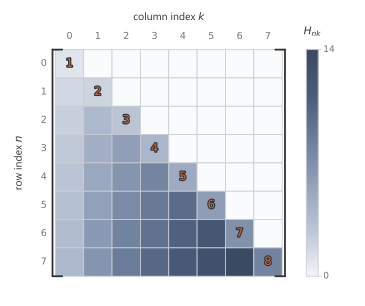
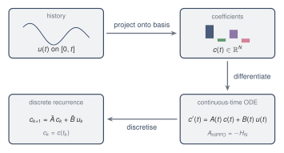

# shared example: the stable HiPPO-LegS state matrix A_HiPPO = -H_N for N = 4
import numpy as np
from ssm_book.numpy_ref.hippo import legs_matrix
N = 4
A_ref = np.asarray(legs_matrix(N)) # NumPy cross-backend reference8 HiPPO
Projection gives meaningful state coordinates, but not yet an online recurrence. For the shifted Legendre basis, the projection coefficients of the rescaled history have closed dynamics: their derivative depends only on the current coefficient vector and the current input. The High-order Polynomial Projection Operator, or HiPPO, is the operator that provides these dynamics, and the fixed matrix inside them is the source of the HiPPO state matrix used by S4.
8.1 From projection to a state equation
The projection state stores coefficients of the rescaled history. At time \(t\) the input history is rescaled onto the fixed interval \([0,1]\) by
\[ f_t(r)=u(tr), \]
with \(r=1\) the present endpoint, and the state holds the first \(N\) coefficients of \(f_t\) in an orthonormal polynomial basis, the projection construction developed for the memory problem. The \(n\)th coefficient is
\[ c_n(t) = \int_0^1 u(tr)\phi_n(r)\,\dd r. \]
This integral depends on the entire history through \(u(tr)\). An online state space model may touch only the \(N\) numbers in the coefficient vector \(c(t)\) and the single number \(u(t)\) at each step, and it is not obvious that any basis lets the coefficients be updated from those alone. Online updating requires their derivatives to be expressible in terms of \(c(t)\) and \(u(t)\).
For the shifted Legendre basis, the coefficients satisfy a closed differential equation of the form
\[ c'(t)=A(t)c(t)+B(t)u(t). \]
The matrices \(A(t)\) and \(B(t)\) depend on \(t\) only through the shared scalar factor \(1/t\). After this factor is removed, the fixed matrix is the Legendre-scaled HiPPO matrix, written HiPPO-LegS.1 The suffix LegS denotes the scaled-history construction with shifted Legendre polynomials on \([0,1]\).
8.2 The shifted Legendre basis
Let \(P_n\) be the ordinary Legendre polynomial of degree \(n\) on \([-1,1]\). The shifted normalised Legendre polynomial on \([0,1]\) is
\[ \phi_n(r) = \sqrt{2n+1}\,P_n(2r-1), \qquad n=0,1,2,\dots. \]
The normalisation gives
\[ \int_0^1 \phi_n(r)\phi_k(r)\,\dd r = \begin{cases} 1, & n=k,\\ 0, & n\ne k. \end{cases} \]
Thus the functions \(\phi_n\) form an orthonormal polynomial basis for \(L^2([0,1])\).
Orthonormality is what makes each coefficient an inner product. With it, \(c_n(t)=\int_0^1 f_t(r)\phi_n(r)\,\dd r\) is the component of the history along \(\phi_n\). The same orthogonality later turns an integral against a polynomial into a linear combination of the existing coefficients.
The endpoint values are simple. From \(P_n(1)=1\) and \(P_n(-1)=(-1)^n\), the two endpoints are
\[ \phi_n(1)=\sqrt{2n+1}, \qquad \phi_n(0)=(-1)^n\sqrt{2n+1}. \]
The value at \(r=1\) becomes the input vector in the coefficient dynamics, because \(r=1\) is the present endpoint of the rescaled history.
8.3 Differentiating the coefficients
To turn the projection into a state equation, differentiate the coefficient with respect to \(t\), remove the derivative of the input by integration by parts, expand the resulting integrand in the basis, and read off a closed system. Start with
\[ c_n(t) = \int_0^1 u(tr)\phi_n(r)\,\dd r. \]
Differentiate with respect to \(t\):
\[ c_n'(t) = \int_0^1 r u'(tr)\phi_n(r)\,\dd r. \]
The derivative \(u'\) should not appear in the final state equation. To remove it, use
\[ \frac{\dd}{\dd r}u(tr)=t u'(tr). \]
Therefore
\[ r u'(tr) = \frac{1}{t}r\frac{\dd}{\dd r}u(tr). \]
Substituting gives
\[ c_n'(t) = \frac{1}{t} \int_0^1 r\frac{\dd}{\dd r}u(tr)\phi_n(r)\,\dd r. \]
The integrand carries a derivative in \(r\), so integration by parts moves it onto the known factor \(r\phi_n(r)\) and produces a boundary term that supplies the input. Integrating by parts,
\[ \begin{aligned} c_n'(t) &= \frac{1}{t} \left[r u(tr)\phi_n(r)\right]_{0}^{1} - \frac{1}{t} \int_0^1 u(tr) \frac{\dd}{\dd r}\left(r\phi_n(r)\right) \,\dd r. \end{aligned} \]
The boundary term at \(r=0\) vanishes because of the factor \(r\). The boundary term at \(r=1\) is
\[ \frac{1}{t}u(t)\phi_n(1). \]
Thus
\[ c_n'(t) = \frac{1}{t}\phi_n(1)u(t) - \frac{1}{t} \int_0^1 u(tr) \frac{\dd}{\dd r}\left(r\phi_n(r)\right) \,\dd r. \]
The remaining integral still contains the history through \(u(tr)\). To express it in the coefficients themselves, expand its kernel in the basis. The derivative
\[ \frac{\dd}{\dd r}\left(r\phi_n(r)\right) \]
is a polynomial of degree \(n\). It can therefore be expanded in the first \(n+1\) shifted Legendre basis functions:
\[ \frac{\dd}{\dd r}\left(r\phi_n(r)\right) = \sum_{k=0}^{n}H_{nk}\phi_k(r). \]
For the shifted Legendre basis,
\[ H_{nk} = \begin{cases} \sqrt{(2n+1)(2k+1)}, & n>k,\\ n+1, & n=k,\\ 0, & n<k. \end{cases} \]
The entries vanish for \(n<k\) because \(\frac{\dd}{\dd r}(r\phi_n)\) has degree \(n\) and is orthogonal to every higher-degree basis function. The diagonal \(n+1\) comes from the leading coefficient of \(r\phi_n\).
Substituting the expansion into the integral gives
\[ \int_0^1 u(tr) \frac{\dd}{\dd r}\left(r\phi_n(r)\right) \,\dd r = \sum_{k=0}^{n}H_{nk}c_k(t). \]
Since
\[ \phi_n(1)=\sqrt{2n+1}, \]
the coefficient dynamics are
\[ \boxed{ c_n'(t) = -\frac{1}{t}\sum_{k=0}^{n}H_{nk}c_k(t) + \frac{1}{t}\sqrt{2n+1}\,u(t). } \]
The derivative of the \(n\)th coefficient depends only on the current input and on coefficients of degree at most \(n\), so the projection coefficients can be updated online.
8.4 The HiPPO-LegS matrix
Collect the first \(N\) coefficients into
\[ c(t)= (c_0(t),c_1(t),\dots,c_{N-1}(t))^\top. \]
Define the matrix
\[ H_N=(H_{nk})_{0\le n,k<N} \]
and the vector
\[ b_N= (\sqrt{1},\sqrt{3},\dots,\sqrt{2N-1})^\top, \]
with entries \((b_N)_n=\phi_n(1)=\sqrt{2n+1}\), the endpoint values of Section 2. Then the coefficient dynamics are
\[ \boxed{ c'(t) = -\frac{1}{t}H_Nc(t) + \frac{1}{t}b_Nu(t). } \]
For \(N=4\),
\[ H_4 = \begin{pmatrix} 1 & 0 & 0 & 0\\ \sqrt{3} & 2 & 0 & 0\\ \sqrt{5} & \sqrt{15} & 3 & 0\\ \sqrt{7} & \sqrt{21} & \sqrt{35} & 4 \end{pmatrix}. \]
The stable state matrix associated with this construction is
\[ A_{\HiPPO}=-H_N. \]
Different sources place the sign differently. Here \(H_N\) denotes the positive lower triangular matrix and \(A_{\HiPPO}=-H_N\) the stable state matrix, so the eigenvalues of \(A_{\HiPPO}\) have negative real part and the continuous-time dynamics are stable before learning changes the parameters.
The matrix is lower triangular and dense below the diagonal. The diagonal terms give decay rates. The lower triangular terms describe how coefficients of lower-degree history components influence higher-degree components as the interval stretches.
Because \(A_{\HiPPO}\) is lower triangular, its eigenvalues are its diagonal entries \(-1,-2,\dots,-N\). The three backends build the same matrix for \(N=4\), so their sorted eigenvalues and entries agree to floating-point error.
Each library builds \(A_{\HiPPO}\), prints its sorted eigenvalues, and reports the largest entrywise difference from this reference:
A = legs_matrix(N)
eigs = np.sort(np.linalg.eigvals(A).real)
print(eigs)
err = float(np.max(np.abs(np.asarray(A) - A_ref)))
print(f"max |A - A_ref| = {err:.1e}")[-4. -3. -2. -1.]
max |A - A_ref| = 0.0e+00import torch
from ssm_book.torch_ref.hippo import legs_matrix as legs_matrix_t
A = legs_matrix_t(N)
eigs = torch.sort(torch.linalg.eigvals(A).real).values
print(eigs)
err = float(np.max(np.abs(np.asarray(A) - A_ref)))
print(f"max |A - A_ref| = {err:.1e}")tensor([-4., -3., -2., -1.], dtype=torch.float64)
max |A - A_ref| = 0.0e+00import jax.numpy as jnp
from ssm_book.jax_ref.hippo import legs_matrix as legs_matrix_j
A = legs_matrix_j(N)
eigs = jnp.sort(jnp.linalg.eigvals(A).real)
print(eigs)
err = float(np.max(np.abs(np.asarray(A) - A_ref)))
print(f"max |A - A_ref| = {err:.1e}")[-4. -3. -2. -1.]
max |A - A_ref| = 0.0e+00
8.5 What the state contains
The state \(c(t)\) does not store the most recent \(N\) input values. It stores the first \(N\) coefficients of the polynomial projection of the rescaled history
\[ f_t(r)=u(tr). \]
A length-\(N\) buffer stores the last \(N\) samples exactly and forgets everything older. The coefficient state \(c(t)\) stores no individual sample exactly. It instead summarises every part of the history at degree-\(N\) resolution, and what it forgets is the variation finer than a degree-\(N\) polynomial can resolve.
The coordinate \(c_0(t)\) records the constant component of the history. The coordinate \(c_1(t)\) records the linear component. The coordinate \(c_2(t)\) records the quadratic component. In general, \(c_n(t)\) records the degree-\(n\) component after all lower-degree components have been separated by orthogonality.
By orthonormality, the squared truncation error of the reconstruction \(\hat f_t=\sum_{n<N}c_n\phi_n\) is exactly the tail sum of discarded coefficients,
\[ \|f_t-\hat f_t\|_{L^2}^2=\sum_{n\ge N}c_n(t)^2, \]
the energy in the coefficients the state discards. Adding a coordinate removes one term from this sum, so the reconstruction sharpens as \(N\) grows. Running the discretised dynamics on \(u(t)=\sin(2\pi t)\) and reconstructing at \(t=1\) shows the effect numerically. At \(N=4\) the four coefficients cannot resolve a full sine period and the maximum reconstruction error is \(2.0\times10^{-1}\). By \(N=16\) it has fallen to \(2.4\times10^{-5}\), set by the time-stepping floor rather than the basis. Exercise 3 verifies these figures.
The construction is useful for long histories because the coordinates are not tied to fixed lags. They describe the shape of the history across the entire interval.
8.6 The time factor
The equation
\[ c'(t) = -\frac{1}{t}H_Nc(t) + \frac{1}{t}b_Nu(t) \]
is not time-invariant, because of the factor \(1/t\).
The factor has a direct interpretation. When \(t\) is small, adding a short interval of new input changes the rescaled history substantially. When \(t\) is large, adding the same amount of new time changes the rescaled history less. The update of the coefficients therefore slows down as the represented history grows.
The time-varying system computes the projection exactly, but fixed convolution kernels require a time-invariant layer. S4 keeps the matrix for its spectrum and triangular structure and discards the \(1/t\). The state then no longer equals the exact projection coefficients, and the learned step size \(\Delta\) sets the effective timescale.
The fixed matrix
\[ A_{\HiPPO}=-H_N \]
becomes the starting point for the time-invariant state space layer used in the Structured State Space sequence model, or S4 (Gu et al. 2022):
\[ x'(t)=Ax(t)+Bu(t), \qquad y(t)=Cx(t). \]
The learned step sizes and discretisation determine the effective timescales in the sampled sequence. The inherited HiPPO state matrix comes from an online projection problem rather than from a random initialisation.

8.7 Notation
| Symbol | Meaning | Type |
|---|---|---|
| \(P_n\) | ordinary Legendre polynomial on \([-1,1]\) | polynomial |
| \(\phi_n\) | shifted normalised Legendre polynomial on \([0,1]\) | polynomial |
| \(c_n(t)\) | coefficient of \(\phi_n\) in the rescaled history | scalar |
| \(H_N\) | positive HiPPO-LegS matrix | \(\R^{N\times N}\) |
| \(b_N\) | HiPPO input vector | \(\R^N\) |
| \(A_{\HiPPO}\) | stable HiPPO state matrix \(-H_N\) | \(\R^{N\times N}\) |
Summary
For the shifted Legendre basis, the projection coefficients of the rescaled history satisfy a closed differential equation. The coefficient vector \(c(t)\) can be updated from \(c(t)\) and the current input \(u(t)\), rather than by recomputing all integrals over the past.
The exact HiPPO-LegS dynamics contain a shared factor \(1/t\):
\[ c'(t)=\frac{1}{t}\{A_{\HiPPO}c(t)+b_N u(t)\}. \]
The fixed matrix \(A_{\HiPPO}\) is the part reused by S4. Removing the \(1/t\) factor gives a time-invariant state matrix suitable for convolution kernels, but the state is then no longer exactly the projection coefficient vector at every time.
Exercises
Construct the first four shifted normalised Legendre polynomials \(\phi_0,\phi_1,\phi_2,\phi_3\) on \([0,1]\) from \(\phi_n(r)=\sqrt{2n+1}\,P_n(2r-1)\). Verify by direct integration that \(\int_0^1\phi_n(r)\phi_k(r)\,\dd r\) equals \(1\) when \(n=k\) and \(0\) otherwise, and check that \(\phi_n(1)=\sqrt{2n+1}\) and \(\phi_n(0)=(-1)^n\sqrt{2n+1}\).
TipSolutionThe Legendre polynomials are \(P_0(x)=1\), \(P_1(x)=x\), \(P_2(x)=\tfrac12(3x^2-1)\), \(P_3(x)=\tfrac12(5x^3-3x)\). Substituting \(x=2r-1\) and multiplying by \(\sqrt{2n+1}\) gives \[ \phi_0(r)=1,\quad \phi_1(r)=\sqrt{3}\,(2r-1),\quad \phi_2(r)=\sqrt{5}\,(6r^2-6r+1),\quad \phi_3(r)=\sqrt{7}\,(20r^3-30r^2+12r-1). \] The change of variable \(x=2r-1\) maps \([0,1]\) to \([-1,1]\) with \(\dd r=\tfrac12\dd x\), so \[ \int_0^1\phi_n(r)\phi_k(r)\,\dd r =\sqrt{(2n+1)(2k+1)}\,\tfrac12\int_{-1}^{1}P_n(x)P_k(x)\,\dd x. \] The classical relation \(\int_{-1}^1 P_nP_k\,\dd x=\tfrac{2}{2n+1}\delta_{nk}\) turns the right-hand side into \(\delta_{nk}\), which is the stated orthonormality. The endpoint values follow from \(P_n(1)=1\) and \(P_n(-1)=(-1)^n\): at \(r=1\), \(x=1\) and \(\phi_n(1)=\sqrt{2n+1}\); at \(r=0\), \(x=-1\) and \(\phi_n(0)=(-1)^n\sqrt{2n+1}\). A Gauss–Legendre quadrature confirms both numerically: the \(4\times4\) Gram matrix matches the identity to \(9\times10^{-16}\), and the endpoint values reproduce \(\sqrt{2n+1}=1,\sqrt3,\sqrt5,\sqrt7\) with alternating sign at \(r=0\).
import numpy as np def phi(n, r): c = np.zeros(n + 1); c[n] = 1.0 return np.sqrt(2 * n + 1.0) * np.polynomial.legendre.legval(2 * r - 1, c) xs, ws = np.polynomial.legendre.leggauss(64) # nodes on [-1, 1] r, wr = 0.5 * (xs + 1), 0.5 * ws # rescaled to [0, 1] G = np.array([[np.sum(wr * phi(n, r) * phi(k, r)) for k in range(4)] for n in range(4)]) print(np.max(np.abs(G - np.eye(4)))) # ~9e-16 print([phi(n, 1.0) for n in range(4)]) # sqrt(2n+1) print([phi(n, 0.0) for n in range(4)]) # (-1)^n sqrt(2n+1)Starting from \(c_n'(t)=\int_0^1 r u'(tr)\phi_n(r)\,\dd r\), repeat the integration by parts and the basis expansion of \(\frac{\dd}{\dd r}(r\phi_n(r))\) to derive the closed form \[ H_{nk} = \begin{cases} \sqrt{(2n+1)(2k+1)}, & n>k,\\ n+1, & n=k,\\ 0, & n<k. \end{cases} \] Build \(H_N\) for \(N=4\) from this formula and confirm that it matches \(-A_{\HiPPO}\) returned by
legs_matrix(4).TipSolutionAfter removing \(u'\) by \(ru'(tr)=\tfrac1t r\,\tfrac{\dd}{\dd r}u(tr)\) and integrating by parts, the boundary term at \(r=0\) vanishes through the factor \(r\) and the term at \(r=1\) contributes \(\tfrac1t\phi_n(1)u(t)\). The interior integral carries \(\tfrac{\dd}{\dd r}(r\phi_n(r))\), a polynomial of degree \(n\), so it expands in \(\phi_0,\dots,\phi_n\) with coefficients \(H_{nk}=\int_0^1 \tfrac{\dd}{\dd r}(r\phi_n(r))\,\phi_k(r)\,\dd r\). For the shifted Legendre basis this integral evaluates to \(\sqrt{(2n+1)(2k+1)}\) for \(n>k\) and to \(n+1\) for \(n=k\), and it is zero for \(n<k\) because \(\tfrac{\dd}{\dd r}(r\phi_n)\) has degree \(n\) and so is orthogonal to every \(\phi_k\) with \(k>n\). The diagonal \(n+1\) comes from the leading coefficient of \(r\phi_n(r)\): differentiating raises the degree-\(n\) term’s coefficient by the factor \(n+1\) relative to \(\phi_n\) itself.
The closed form gives \[ H_4= \begin{pmatrix} 1 & 0 & 0 & 0\\ \sqrt3 & 2 & 0 & 0\\ \sqrt5 & \sqrt{15} & 3 & 0\\ \sqrt7 & \sqrt{21} & \sqrt{35} & 4 \end{pmatrix}, \] and
legs_matrix(4)returns \(A_{\HiPPO}=-H_4\). Assembling \(H_4\) from the formula and comparing against \(-A_{\HiPPO}\) gives a maximum entrywise difference of \(9\times10^{-16}\).import numpy as np from ssm_book.numpy_ref.hippo import legs_matrix N = 4 H = np.zeros((N, N)) for n in range(N): for k in range(N): if n > k: H[n, k] = np.sqrt((2 * n + 1) * (2 * k + 1)) elif n == k: H[n, k] = n + 1 A = np.asarray(legs_matrix(N)).real print(np.max(np.abs(H - (-A)))) # ~9e-16(Optional numerical extension.) Discretise \(c'(t)=-\frac{1}{t}H_Nc(t)+\frac{1}{t}b_Nu(t)\) on a uniform grid \(t_1<t_2<\dots\) and run the resulting recurrence on a sampled input, such as \(u(t)=\sin(2\pi t)\). Reconstruct the approximate history \(\hat f_t(r)=\sum_{n=0}^{N-1}c_n(t)\phi_n(r)\) at a fixed time \(t\) and report the maximum reconstruction error against \(u(tr)\) as \(N\) increases from \(4\) to \(32\).
TipSolutionDiscretise the coefficient dynamics \(c'(t)=\tfrac1t(A_{\HiPPO}c+b_Nu)\) by an explicit step on a uniform grid, evaluating the factor \(1/t\) at the step midpoint to avoid the singularity at \(t=0\). Run from rest to \(t=1\) on \(u(t)=\sin(2\pi t)\), then reconstruct \(\hat f_1(r)=\sum_{n<N}c_n(1)\phi_n(r)\) and compare with \(u(r)=\sin(2\pi r)\) on a dense grid of \(r\).
The error falls sharply as \(N\) grows, then stalls once the time-stepping error of the explicit scheme dominates the projection truncation. The numerical grid uses \(2\times10^5\) explicit steps per \(N\); it is deliberately fine, to expose the integrator-limited floor. With this grid the maxima are \[ N=4:\ 2.0\times10^{-1},\quad N=8:\ 6.8\times10^{-4},\quad N=16:\ 2.4\times10^{-5},\quad N=32:\ 2.4\times10^{-5}. \] At \(N=4\) the four coefficients cannot resolve a full sine period, so the error is projection-limited; the ideal \(L^2\) projection onto four basis functions has the same \(2.0\times10^{-1}\) maximum. Past \(N=16\) the residual \(2.4\times10^{-5}\) is set by the integrator, not the basis: the exact degree-\(15\) projection already has maximum error about \(4\times10^{-11}\) for \(\sin(2\pi r)\) on \([0,1]\), and increasing the degree further pushes the projection error to roundoff. Refining the time step lowers the displayed floor, while adding more coordinates does not.
import numpy as np from ssm_book.numpy_ref.hippo import legs_matrix, legs_input def phi(n, r): c = np.zeros(n + 1); c[n] = 1.0 return np.sqrt(2 * n + 1.0) * np.polynomial.legendre.legval(2 * r - 1, c) def run(N, steps=200_000): A = np.asarray(legs_matrix(N)).real b = np.asarray(legs_input(N)).real c, dt = np.zeros(N), 1.0 / steps for j in range(1, steps + 1): t = (j - 0.5) * dt # midpoint for the 1/t factor c = c + dt * (1.0 / t) * (A @ c + b * np.sin(2 * np.pi * t)) return c rr = np.linspace(0, 1, 400) for N in (4, 8, 16, 32): c = run(N) approx = sum(c[n] * phi(n, rr) for n in range(N)) print(N, np.max(np.abs(approx - np.sin(2 * np.pi * rr))))Take the state vector \(c(t)\) produced in Exercise 3 at a fixed time \(t\). Explain, coordinate by coordinate, what each \(c_n(t)\) represents: \(c_0(t)\) as the constant component of the rescaled history, \(c_1(t)\) as the linear component, and \(c_n(t)\) as the degree-\(n\) component after lower-degree components have been removed by orthogonality. Confirm numerically that zeroing all but \(c_0(t)\) leaves the mean of the history over \([0,1]\) unchanged.
TipSolutionBy orthonormality, \(c_n(t)=\int_0^1 f_t(r)\phi_n(r)\,\dd r\) is the inner product of the rescaled history \(f_t(r)=u(tr)\) with \(\phi_n\). The reconstruction \(\hat f_t=\sum_{n<N}c_n\phi_n\) is the orthogonal projection of \(f_t\) onto polynomials of degree below \(N\), so \(c_n\) is the amount of \(f_t\) that lies along \(\phi_n\) once the lower-degree directions have been removed. Concretely \(c_0\) is the constant component, \(c_1\) the linear component after the constant is removed, \(c_2\) the quadratic component after constant and linear are removed, and in general \(c_n\) is the degree-\(n\) component left after orthogonality has stripped out every lower degree.
The mean of the history is the constant component alone. Since \(\phi_0\equiv1\), \[ \int_0^1\hat f_t(r)\,\dd r =\sum_{n=0}^{N-1}c_n\int_0^1\phi_n(r)\,\dd r =c_0, \] because \(\int_0^1\phi_n\,\dd r=0\) for every \(n\ge1\) (each \(\phi_n\) is orthogonal to the constant \(\phi_0\)). Zeroing \(c_1,\dots,c_{N-1}\) therefore changes the shape of the reconstruction but leaves \(\int_0^1\hat f_t=c_0\) untouched. Numerically, for the state produced in Exercise 3 with \(N=8\), the mean of the full reconstruction and the mean of \(c_0\phi_0\) alone agree to floating-point level, their difference about \(3\times10^{-17}\), so zeroing \(c_1,\dots,c_{N-1}\) changes the shape of the reconstruction but leaves the mean untouched.
import numpy as np from ssm_book.numpy_ref.hippo import legs_matrix, legs_input def phi(n, r): c = np.zeros(n + 1); c[n] = 1.0 return np.sqrt(2 * n + 1.0) * np.polynomial.legendre.legval(2 * r - 1, c) def run(N, steps=200_000): # the recurrence of Exercise 3 A = np.asarray(legs_matrix(N)).real b = np.asarray(legs_input(N)).real c, dt = np.zeros(N), 1.0 / steps for j in range(1, steps + 1): t = (j - 0.5) * dt # midpoint for the 1/t factor c = c + dt * (1.0 / t) * (A @ c + b * np.sin(2 * np.pi * t)) return c xs, ws = np.polynomial.legendre.leggauss(64) r, wr = 0.5 * (xs + 1), 0.5 * ws N = 8 c = run(N) # state vector from Exercise 3 full = sum(c[n] * phi(n, r) for n in range(N)) only_c0 = c[0] * phi(0, r) mean_full = float(np.sum(wr * full)) mean_c0 = float(np.sum(wr * only_c0)) print(mean_full, mean_c0, abs(mean_full - mean_c0))
Footnotes and references
The online polynomial-projection construction and the HiPPO-LegS matrix were introduced by Gu, Dao, Ermon, Rudra, and Ré (Gu et al. 2020). The resulting state matrix is used as the starting point for the structured state space layer of S4 (Gu et al. 2022). The projection itself rests on the classical theory of orthogonal polynomials, in particular the shifted Legendre basis and its orthogonality and endpoint values; a standard reference is Szegő (Szegő 1939).↩︎